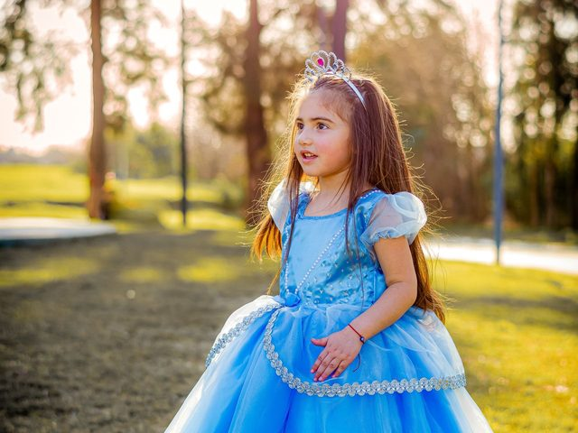
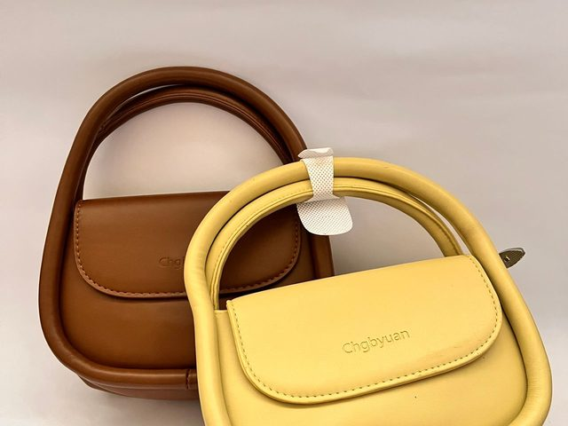

VOCABULARY · WORD UP 單字複習 UNIT 37
P-IV．P 開頭（四）
WORD UP「P-IV」的 41 個字（primary 到 puzzle）。紅色＝要複習，藍色標籤＝WORD UP 標熟記、還要在這裡考對。
共 41 個單字．點 🔊 聽發音
1primaryadj.
主要的；初級的
primary school 小學
My sister is in primary school.我妹妹讀小學。

2princen.
王子
The prince lived in a castle.王子住在城堡裡。

3princessn.
公主
The princess has long hair.公主有一頭長髮。

4principaln.
校長
The principal gave a speech.校長致詞。
5principlen.
原則
和 principal 同音
Honesty is my principle.誠實是我的原則。

6printv.
列印；印刷
Please print this page for me.請幫我印這一頁。

7printern.
印表機
The printer is out of paper.印表機沒紙了。
8prisonn.
監獄
The thief was sent to prison.小偷被送進監獄。
9prisonern.
囚犯
The prisoner escaped.囚犯逃走了。
10privateadj.
私人的
public 公共的
This is a private beach.這是私人海灘。

11prizen.
獎品；獎
win first prize 得第一名
She won first prize in the contest.她在比賽中得了第一名。
12probablyadv.
大概；很可能
It will probably rain tonight.今晚很可能會下雨。
13problemn.
問題
No problem. 沒問題
Can you help me? — No problem!你可以幫我嗎？——沒問題！
14producev.
生產；製造
This factory produces bikes.這家工廠生產腳踏車。
15productn.
產品
This is a new product.這是新產品。

16productionn.
生產；產量
Rice production is high this year.今年稻米產量很高。

17professorn.
教授
My uncle is a professor at a university.我叔叔是大學教授。

18programn.
節目；計畫；程式
What's your favorite TV program?你最喜歡哪個電視節目？
19progressn.
進步
不可數；make progress 進步
You have made great progress.你進步很多。

20projectn.
專案；計畫；報告
We are working on a science project.我們在做一份自然科專題。
21promisev./n.
承諾；答應
keep a promise 守信
I promise to come back.我答應會回來。
22pronouncev.
發音
pronunciation 發音（名詞）
How do you pronounce this word?這個字怎麼唸？
23proposev.
提議；求婚
He proposed a new plan.他提出一個新計畫。
24protectv.
保護
protect A from B
Sunglasses protect your eyes from the sun.太陽眼鏡保護你的眼睛不被陽光傷害。
25protectionn.
保護
Wear a helmet for protection.戴安全帽保護自己。

26proudadj.
驕傲的；自豪的
be proud of
My parents are proud of me.我爸媽以我為榮。
27provev.
證明
Can you prove it?你能證明嗎？
28providev.
提供
provide + 人 + with + 物
The school provides us with lunch.學校提供我們午餐。
29publicadj./n.
公共的；大眾
in public 公開地
Don't shout in public.不要在公共場合大叫。

30pullv.
拉
push 推
Pull the door to open it.把門拉開。

31pumpn./v.
幫浦；打氣
Use the pump to fill the tire.用打氣筒幫輪胎打氣。
32pumpkinn.
南瓜
We made a pumpkin lantern for Halloween.我們為萬聖節做了南瓜燈。

33punishv.
處罰
punishment 處罰（名詞）
The teacher punished him for being late.老師因為他遲到處罰他。

34puppyn.
小狗
複數 puppies
The puppy is so cute.那隻小狗好可愛。
35purchasev./n.
購買
= buy
You can purchase tickets online.你可以在網路上買票。

36purpleadj./n.
紫色的
Grapes are purple.葡萄是紫色的。
37purposen.
目的
on purpose 故意地
He did it on purpose.他是故意的。

38pursen.
錢包（女用）
She put her purse in her bag.她把錢包放進包包。

39pushv.
推
Push the button.按下按鈕。
40putv.
放
三態都是 put；put on 穿上
Put on your coat.穿上外套。

41puzzlen.
謎題；拼圖
Let's do a jigsaw puzzle.我們來拼拼圖吧。
FOCUS
重點整理
| 說法 | 中文 | 例子 |
|---|---|---|
| principal / principle | 校長 ／ 原則（同音） | the school principal ／ a basic principle |
| be proud of | 以…為榮 | proud of my team |
| provide + 人 + with + 物 | 提供某人某物 | provide us with water |
| protect A from B | 保護 A 不受 B 傷害 | protect your skin from the sun |
| make progress | 進步（不可數） | make great progress |
| on purpose | 故意地 | break it on purpose |
| push / pull | 推 ／ 拉 | push the door ／ pull the rope |
put 三態都一樣；put on 穿上、put away 收好。